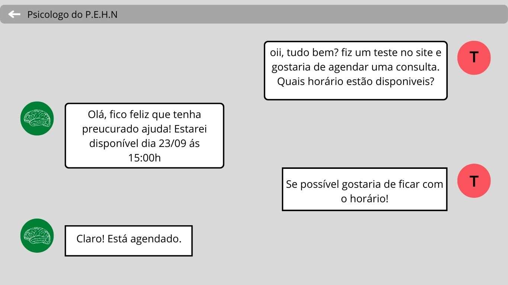
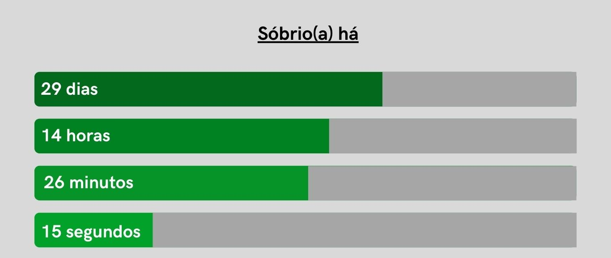

Essa site está a sua despinibilização onde podera obter conhecimento sobre inteligência emocional para a auto compreensão.
Os testes variam de acordo com a sua escolha, por exemplo: se frequentemente tenho alterações de humor, farei o teste para um possível transtorno bipolar.
Logo após concluir o teste você pode encaminha-lo para um profissional de sua escolha. Você também poderá definir o horário de sua consulta conforme a agenda do especialista. Você poderá acessar um fórum para relatar suas experiencia pessoais, assim também como conversar com pessoas em situações parecidas.

Além das funcionalidades acima o site vai possuir uma pagina de denuncia para pessoas que se encontram em situações de abusos psicológicos e sexual, e um relogio e historico para vicios. Vicio é o nome é dado ao desejo intenso de usar uma droga ou repetir um comportamento, quando a pessoa, por exempo, usa droga, se embebeda, pratica automutilação para poder aliviar e se sentir melhor em relação ao que está acontecendo, um habito repetitivo que degenera ou causa algum prejuízo ao viciado e aos que com ele convivem.
Funcionara da seguinte forma:
